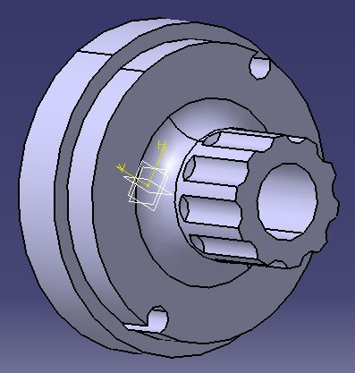

Curiosidad
Intentar explicar con palabras, lo que en realidad es un proceso creativo, es en ocasiones complejo.
Por eso te recomendamos veas este vídeo, que te puede dar una idea de cómo se diseña algo.
Intentar explicar con palabras, lo que en realidad es un proceso creativo, es en ocasiones complejo.
Por eso te recomendamos veas este vídeo, que te puede dar una idea de cómo se diseña algo.
El proceso de diseño se suele dividir en cinco fases:
1. Identificación de oportunidades o necesidades.
2. Evaluación y selección de ideas.
3. Desarrollo e ingeniería del producto y del proceso.
4. Pruebas y evaluación (prototipos).
5. Comienzo de la producción.
Se obtiene información sobre las necesidades que tienen la sociedad o que tipo de producto reclama, tras lo que se decide: crear un producto innovador, introducir cambios significativos en un producto que ya existe, o introducir ligeras modificaciones en un producto existente.
Durante esta fase se fija el diseño del concepto, se seleccionan los mercados a los que se va a dirigir el producto, el nivel de rendimiento, los recursos necesarios y el previsible impacto financiero del nuevo producto.
Las principales fuentes de ideas para este proceso son:
Se seleccionan las ideas con más posibilidades de éxito, lo que conlleva un análisis de la viabilidad del producto desde distintos puntos de vista:
En esta fase se llevan a cabo la mayoría de las actividades de diseño de detalle y de desarrollo del producto, así como de los procesos productivos necesarios para la fabricación y posterior lanzamiento al mercado.
|

|
| Imagen de Aardvark en Wikimedia. Dominio público |
Se realizan las pruebas y se evalúan los diseños realizados, para lo se procede a la fabricación de prototipos y se simula el proceso de fabricación, tratando de detectar todas las posibles deficiencias, tanto del nuevo producto como del proceso de fabricación.
Simultáneamente se realizan pruebas de mercado para simular las condiciones reales a las que debe enfrentarse el nuevo producto, se pueden realizar hipotéticamente en un laboratorio, o en una zona del mercado, que resulte representativa, donde se va a dirigir el producto, para seleccionar la estrategia de lanzamiento más adecuada y poder prever la cifra de ventas.
Si los resultados de la evaluación y pruebas son propicios se culmina el proceso con la fabricación a gran escala del producto, se inicia el proceso de lanzamiento del nuevo producto, su distribución inicial y todas las operaciones necesarias para apoyar su irrupción en el mercado.
El proceso se realiza de forma iterativa hasta conseguir el diseño más adecuado a las exigencias de los consumidores. A este proceso iterativo se le conoce como Ciclo de diseño-fabricación-prueba.
En las siguiente vídeo vemos cómo se materializa el diseño de un automóvil, desde un boceto a una maqueta que se construye en arcilla.
Vídeo de alemique alojado en Youtube
Obra publicada con Licencia Creative Commons Reconocimiento No comercial Compartir igual 4.0
{kind=link}